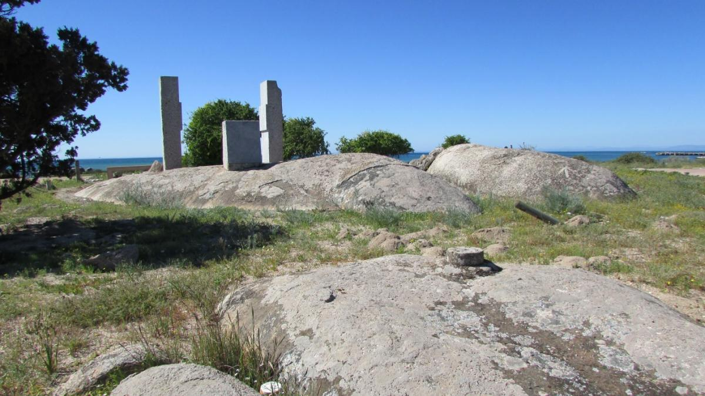

Interactive Papers
Vasco da Gama,
“Round Africa to India”
(1497-98), from Oliver J. Thatcher, ed.,
The Library of Original Sources, vol. 5 (Milwaukee:
University Research Extension Co., 1907), 26-40, scanned and
modernized text by J. S. Arkenberg, and reprinted as part of the
Internet Modern History Sourcebook, Paul Halsall, ed., June1998,
.
1497 The Bay of St. Helena [on the west coast of the present country
of South Africa]. On Tuesday (November 7) we returned to the land,
which we found to be low, with a broad bay opening into it. The
captain-major [i.e., da Gama speaking in the third person] sent Pero
d'Alenquer in a boat to take soundings and to search for good
anchoring ground. The bay was found to be very clean, and to afford
shelter against all winds except those from the N.W. It extended
east and west, and we named it Santa Helena.

On Wednesday (November 8) we cast anchor in this bay, and we
remained there eight days, cleaning the ships, mending the sails,
and taking in wood. The river Samtiagua (S. Thiago) enters the bay
four leagues to the S.E. of the anchorage. It comes from the
interior (sertao), is about a stone's throw across at the mouth, and
from two to three fathoms in depth at all states of the tide. The
inhabitants of this country are tawny-colored. Their food is
confined to the flesh of seals, whales and gazelles, and the roots
of herbs. They are dressed in skins, and wear sheaths over their
virile members. They are armed with poles of olive wood to which a
horn, browned in the fire, is attached.
Their numerous dogs resemble those of Portugal, and bark like
them. The birds of the country, likewise, are the same as in
Portuga
l, and include cormorants, gulls, turtle doves,
crested larks, and many others.
The climate is healthy and temperate, and produces good
herbage. On the day after we had cast anchor, that is to say on Thursday
(November 9), we landed with the captain-major, and took
captive one of the natives, who was small of stature like
Sancho Mexia. This man had been gathering honey in the sandy
waste, for in this country the bees deposit their honey at the foot
of the mounds around the bushes. He was taken on board the
captain-major's ship, and being placed at the table, he ate of all
we ate. On the following day the captain-major had him well dressed
and sent ashore.
On the following day (November 10) fourteen or fifteen natives came to where our ship lay. The captain-major landed and showed them a variety of merchandise, with the view of finding out whether such things were to be found in their country. This merchandise included cinnamon, cloves, seed-pearls, gold, and many other things, but it was evident that they had no knowledge whatsoever of such articles, and they were consequently given round bells and tin rings. This happened on Friday, and the like took place on Saturday. On Sunday (November 12) about forty or fifty natives made their appearance, and having dined, we landed, and in exchange for the with which we came provided, we obtained shells, which they wore as ornaments in their ears, and which looked as if they had been plated, and foxtails attached to a handle, with which they fanned their faces. The captain-major also acquired for one çeitil one of the sheaths which they wore over their members, and this seemed to show that they valued copper very highly; indeed, they wore small beads of that metal in their ears.
On that day Fernao Velloso, who was with the captain-major, expressed a great desire to be permitted to accompany the natives to their houses, so that he might find out how they lived and what they ate. The captain-major yielded to his importunities, and allowed him to accompany them, and when we returned to the captain-major's vessel to sup, he went away with the negroes. Soon after they had left us they caught a seal, and when they came to the foot of a hill in a barren place they roasted it, and gave some of it to Fernao Velloso, as also some of the roots which they eat. After this meal they expressed a desire that he should not accompany them any further, but return to the vessels. When Fernao Velloso came abreast of the vessels he began to shout, the negroes keeping in the bush.
We were still at supper; but when his shouts were heard the captain-major rose at once, and so did we others, and we entered a sailing boat. The negroes then began running along the beach, and they came as quickly up with Fernao Velloso as we did, and when we endeavored to get him into the boat they threw their assegais, and wounded the captain-major and three or four others. All this happened because we looked upon these people as men of little spirit, quite incapable of violence, and had therefore landed without first arming ourselves. We then returned to the ships.